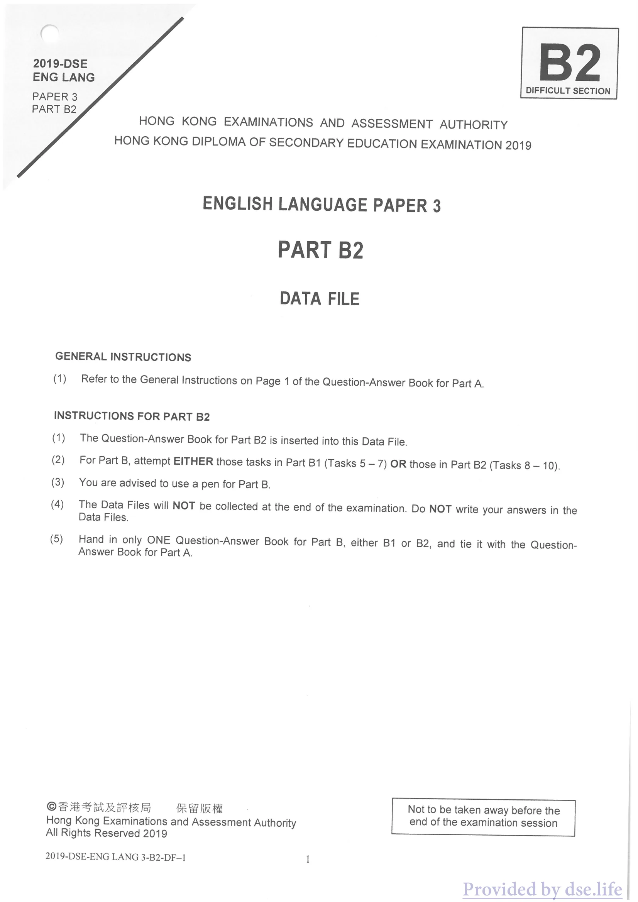
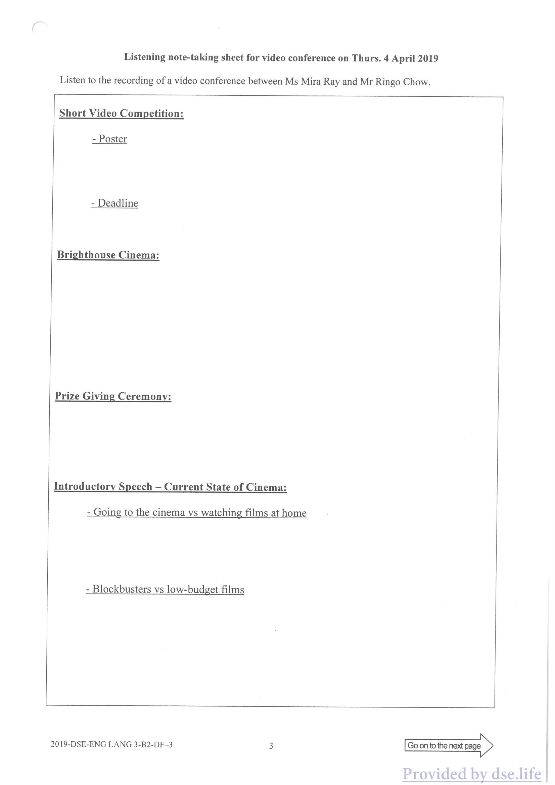
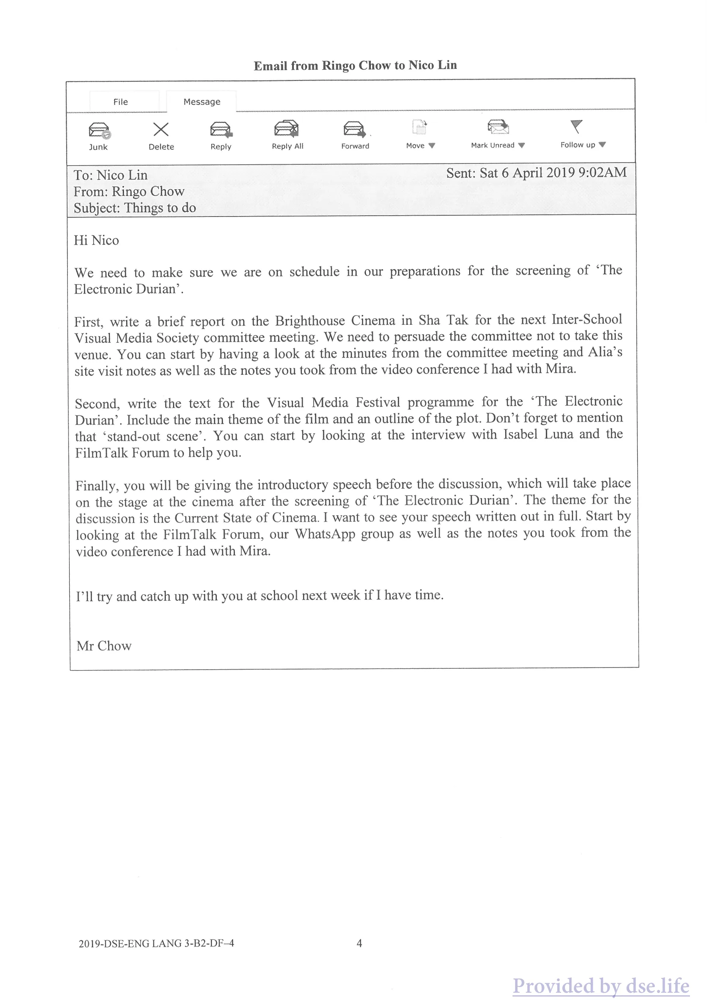
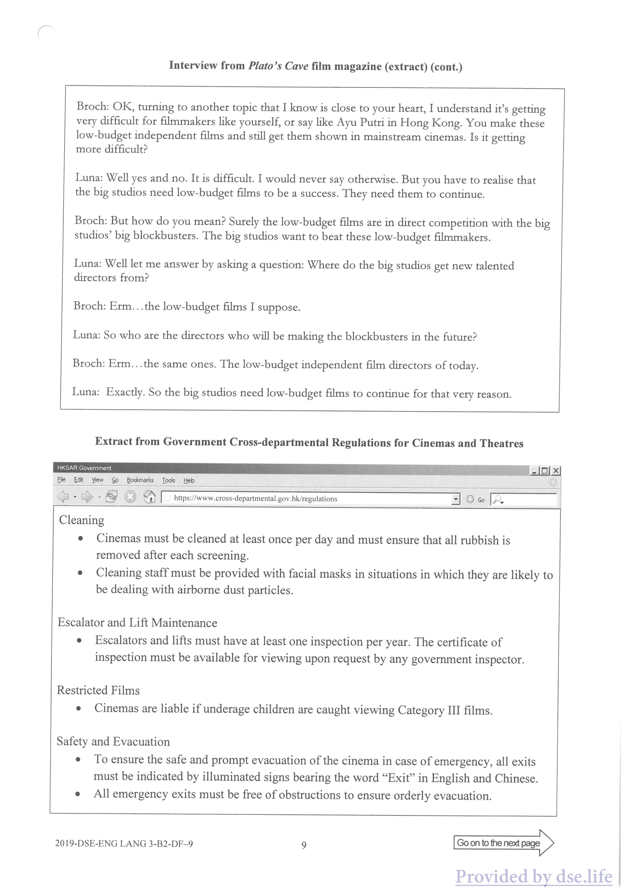
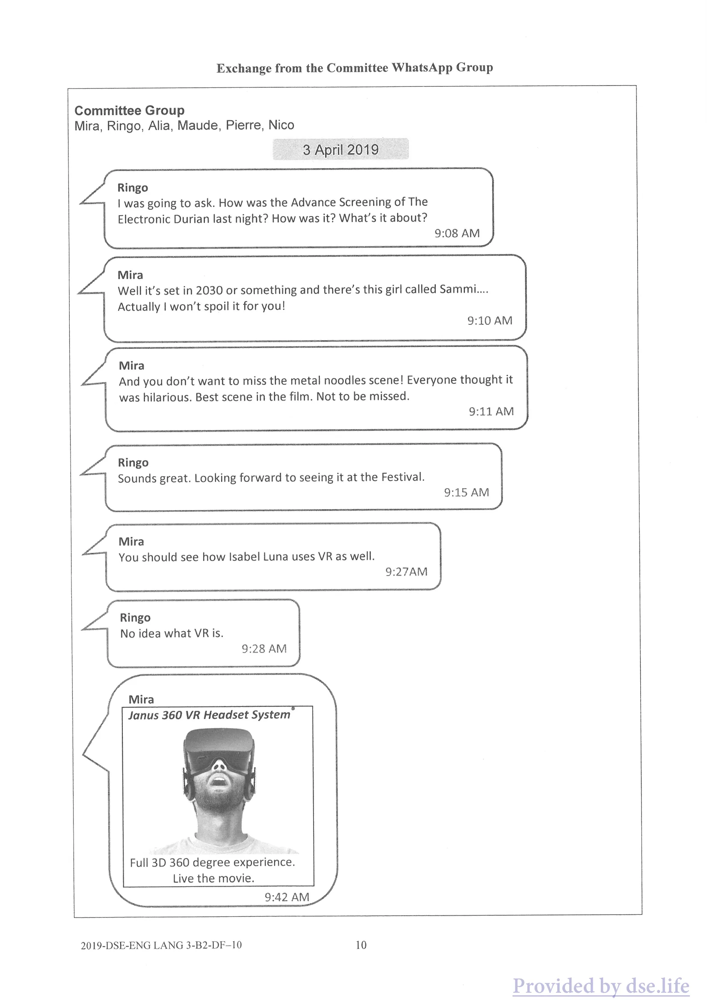
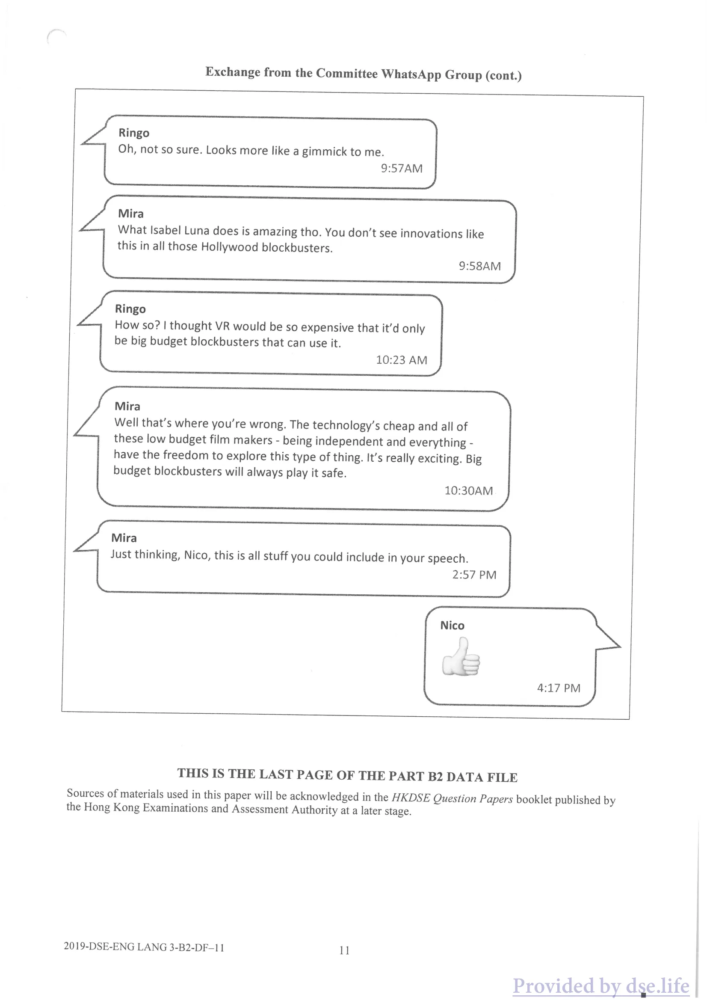
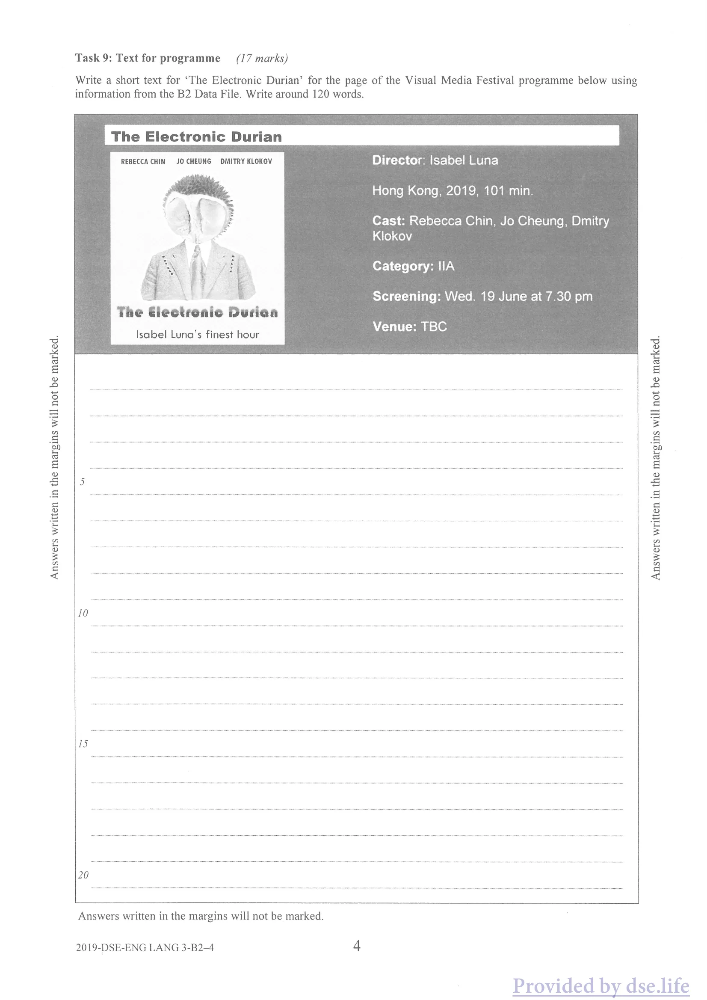
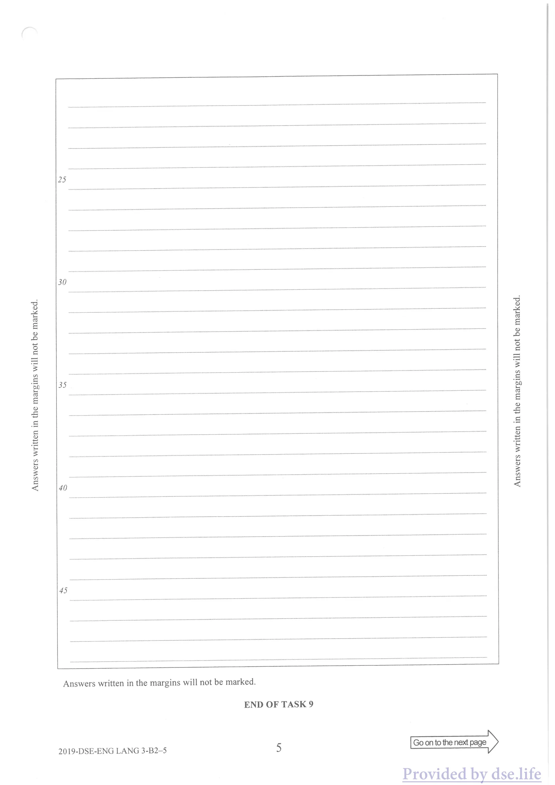

HONG KONG DIPLOMA OF SECONDARY EDUCATION EXAMINATION 2019
ENGLISH LANGUAGE PAPER 3
PART B2
DATA FILE
GENERAL INSTRUCTIONS
(1) Refer to the General Instructions on Page 1 of the Question-Answer Book for Part A.
INSTRUCTIONS FOR PART B2
(1) The Question-Answer Book for Part B2 is inserted into this Data File. (2) For Part B, attempt EITHER those tasks in Part B1 (Tasks 5 — 7) OR those in Part B2 (Tasks 8 — 10). (3) You are advised to use a pen for Part B. (4) The Data Files will NOT be collected at the end of the examination. Do NOT write your answers in the Data Files.
(5) Hand in only ONE Question-Answer Book for Part B, either B1 or B2, and tie it with the Question- Answer Book for Part A.
OF BS ARAKI GR ARE Not to be taken away before the Hong Kong Examinations and Assessment Authority end of the examination session All Rights Reserved 2019
2019-DSE-ENG LANG 3-B2-DF-1 1

原卷版面 · 圖表、照片及留白依原頁保留
中文對照
B2 2019-DSE 英朗 困難部分 論文3 B2 部分 香港考試及評鑑局 2019年香港中學文憑考試 英語試卷 3 B2 部分 資料檔案 一般說明 (1) 請參閱 A 部分問答書第 1 頁的一般說明。 B2 部分說明 (1) B2 部分的問答書插入此資料檔。 (2) 對於 B 部分，嘗試 B1 部分（任務 5 - 7）中的任務或 B2 部分（任務 8 - 10）中的任務。 (3) B 部分建議使用筆。 (4) 考試結束時不會收集資料檔。不要將您的答案寫在資料檔案中。 (5) B部分只交一本問答書，B1或B2之一，並與A部分問答書捆綁在一起。 OF BS ARAKI GR ARE 在香港考試及評核局考試結束前不得被帶走 版權所有 2019 2019-DSE-ENG LANG 3-B2-DF-1 1
Data File · 原卷第 38 頁
可選取的英文文字
Part B
Situation
You are Nico Lin. You are the Secretary for the Inter-School Visual Media Society. You assist Mr Ringo Chow, your school’s Audio-Visual teacher and the Vice Chair of the Inter-School Visual Media Society. The society is currently organising its annual Visual Media Festival, which will take place in June. Mr Ringo Chow has asked you to do some tasks.
You will listen to a recording of a video conference discussion between Ms Mira Ray, the Chair of the Inter-School Visual Media Society, and Ringo Chow. Take notes under the appropriate headings. Before the recording is played, you will have five minutes to study the Question-Answer Book and the Data File to familiarise yourself with the situation and the tasks. Complete the tasks by following the instructions in the Question-Answer Book and on the recording. You will find all the information you need in the Question-Answer Book, the Data File and on the recording. As you listen you can make notes on Page 3 of the Data File. You now have five minutes to familiarise yourself with the Question-Answer Book and the Data File.
Contents
Page
1. Listening note-taking sheet for video conference on Thurs. 4 April 2019 .. 3 2: Email from Ringo Chow to Nico Lin .. 4 3. FilmTalk Forum Website ..c.c — 5 4. Minutes of the Meeting of the Inter-School Visual Media Society COMMU ssces cs creesesvecorseerererreeee roe 6 5: Notes from site visit of Brighthouse Cinema 7 6. Interview from Plato’s Cave film magazine (extract) 8-9 7. Extract from Government Cross-departmental Regulations for Cinemas and Theatres — 9 8. Exchange from the Committee WhatsApp Group — 11
Listening note-taking sheet for video conference on Thurs. 4 April 2019 Listen to the recording of a video conference between Ms Mira Ray and Mr Ringo Chow.
Short Video Competition:
- Poster
- Deadline
Brighthouse Cinema:
Prize Giving Ceremony:
Introductory Speech — Current State of Cinema:
- Going to the cinema vs watching films at home
- Blockbusters vs low-budget films
Go on to the next page
2019-DSE-ENG LANG 3-B2-DF-3 3

原卷版面 · 圖表、照片及留白依原頁保留
中文對照
週四視訊會議的聽力筆記表。 2019 年 4 月 4 日 聆聽 Mira Ray 女士與周林戈先生之間的視訊會議錄音。 短片比賽： - 海報 - 截止日期 布萊特豪斯電影院： 頒獎典禮： 介紹性演講－電影現況： - 去電影院與在家看電影 - 大片與低成本電影 轉到下一頁 2019-DSE-ENG LANG 3-B2-DF-3 3
Data File · 原卷第 40 頁
可選取的英文文字
Email from Ringo Chow to Nico Lin
File Message
Junk Delete Reply Reply All Forward Move W Mark Unread W Follow up W
To: Nico Lin Sent: Sat 6 April 2019 9:02AM From: Ringo Chow
Subject: Things to do
Hi Nico
We need to make sure we are on schedule in our preparations for the screening of ‘The Electronic Durian’.
First, write a brief report on the Brighthouse Cinema in Sha Tak for the next Inter-School Visual Media Society committee meeting. We need to persuade the committee not to take this venue. You can start by having a look at the minutes from the committee meeting and Alia’s site visit notes as well as the notes you took from the video conference I had with Mira.
Second, write the text for the Visual Media Festival programme for the ‘The Electronic Durian’. Include the main theme of the film and an outline of the plot. Don’t forget to mention that ‘stand-out scene’. You can start by looking at the interview with Isabel Luna and the FilmTalk Forum to help you.
Finally, you will be giving the introductory speech before the discussion, which will take place on the stage at the cinema after the screening of ‘The Electronic Durian’. The theme for the discussion is the Current State of Cinema. I want to see your speech written out in full. Start by looking at the FilmTalk Forum, our WhatsApp group as well as the notes you took from the video conference I had with Mira.
I'll try and catch up with you at school next week if I have time.
Mr Chow
2019-DSE-ENG LANG 3-B2-DF—4 4

原卷版面 · 圖表、照片及留白依原頁保留
中文對照
Ringo Chow 給 Nico Lin 的電子郵件 文件訊息 垃圾郵件 刪除回覆 回覆全部 前移 W 標記未讀 W 跟進 W 收件者：Nico Lin 寄件者：2019 年 4 月 6 日星期六 9:02AM 寄件者：Ringo Chow 主題：要做的事情 嗨尼科 我們需要確保按計畫進行《電子榴槤》的放映準備工作。 首先，為下屆校際視覺媒體協會委員會會議撰寫有關沙德Brighthouse電影院的簡短報告。我們需要說服委員會不要佔用這個場地。您可以先查看委員會會議記錄和阿莉亞的現場訪問記錄，以及我與米拉舉行的視訊會議的記錄。 其次，為「電子榴槤」視覺媒體節節目撰寫文字。包括電影的主題和情節概要。別忘了提到那個「引人注目的場景」。您可以先查看 Isabel Luna 和 FilmTalk 論壇的採訪來幫助您。 最後，您將在討論前進行介紹性演講，討論將在《電子榴槤》放映後在電影院的舞台上進行。討論的主題是電影的現況。我想看你的演講全文。首先查看 FilmTalk 論壇、我們的 WhatsApp 群組以及您在我與 Mira 的視訊會議上所做的筆記。 如果我有時間的話，下週我會盡量去學校找你。 周先生 2019-DSE-ENG LANG 3-B2-DF—4 4
Data File · 原卷第 41 頁
可選取的英文文字
FilmTalk Forum Website
Bile Edt Yiew Go Bookmarks Tools Help
Just seen the Electronic Durian: Eyesome! Track this topic | Email this topic | Print this topic LittleAlexi Posted: February 1 2019, 11:40 PM You gotta see this movie. Totally rocks to see the Virtual Reality (VR) on 360 degree headset, you know what I’m sayin’. You can see everything all around you. Candy for the eyes. Filminator91 Posted: February 1 2019, 11:43 PM Saw it. Yeah, the VR is mindblowing. The best movie I’ve seen visually in many a year. Period. Nice to watch but what’s it all about? Posted: February 2 2019, 03:05 AM So tired of dummies not getting the meaning of this genius film. Don’t you get it? Rowett Uni Don’t you realize all these evil corporations (you don’t need me to give you names!) make us see the world the way they want us to see it. We are all Sammi!! Filminator91 Posted: February 2 2019, 09:07 AM Woah! Who you callin’ ignorant?! What makes u such an expert? Rowett Uni Posted: February 2 2019, 03:47 PM Teach film studies at top UK university. Are we done now? DroogScoob Posted: February 2 2019, 11:01 PM Wonderful movie. I will never look at noodles the same way tho — LOL! LittleAlexi Posted: February 2 2019, 11:06 PM Yes, I know. NOODLES!!!! I can’t believe that so many people have been criticizing this movie. I saw a YouTube review saying how worthless a movie it was. Unbelievable! It’s the best movie of this millennium. FitLikeMin Posted: February 3 2019, 06:33 AM Who cares? Cinema is dead!! Long live Netflix. Yay! Rowett Uni Posted: February 3 2019, 07:48 AM Actually it’s not. How many times have we heard that? Guess what? Idiots saying TV’s totally gonna destroy cinema. Never has. End of story! FitLikeMin Posted: February 3 2019, 07:54 AM Who’s calling who an idiot? I’ve got access to 100s of movies at home on Netflix. Once everyone’s got that who’s goin’ to bother with the cinema? Answer: Nobody. Rowett Uni Posted: February 3 2019, 08:01 AM Well, everybody actually. It’s basic psychology. (Not that you know what that word means!) Humans need group experiences. Understand? That’s why people even idiots like you, will always need to go to the cinema. To share the experience. CDeaces: (1) [1] 2019-DSE-ENG LANG 3-B2-DF-5 5 Go on to the next page
Minutes of the Meeting of the Inter-School Visual Media Society Committee
Meeting of the Inter-School Visual Media Society Committee Date: Thurs 28 March, 2019 Venue: Multi-media room, Tai Kiu Secondary School Chairperson: Ms Mira Ray In Attendance: — Mr Ringo Chow (Vice Chair) Ms Alia Kapoor (Public Relations and Liaison) Ms Maude Woo (Cinematic Consultant) Mr Pierre Choi (Treasurer) Secretary: Nico Lin
Minutes of Meeting
Venue Requirements for Screening of ‘The Electronic Durian’ Ms Woo confirmed the following requirements for the venue for the screening of ‘The Electronic Durian’ and the post-screening discussion on Wed 19 June:
For the Post-Screening Discussion on Stage
o Minimum size of stage for discussion: depth > 4 metres, length > 20 metres o Wheelchair ramp access onto stage
Venue Choice for Screening of ‘The Electronic Durian’ Of the three possible cinema venues, Mr Choi was of the very strong opinion that the Brighthouse Cinema in Sha Tak was the best option for the venue of the screening of ‘The Electronic Durian’ and the post-screening discussion as it is the cheapest of the three and within the Festival budget. Ms Woo and Ms Kapoor agreed. Ms Ray and Mr Chow expressed very strong reservations about the suitability of the Brighthouse Cinema. Mss Ray told the committee that she had heard rumours that the Brighthouse Cinema failed a government inspection previously. Action to be taken: Ms Alia Kapoor to conduct site visit of the Brighthouse Cinema in coming week. Nico Lin to write report on Brighthouse Cinema for next committee meeting. Next meeting fixed for Tues. 9 April. Venue to be confirmed.
Brighthouse Cinema, Sha Tak Date of visit: Fri. 5/4/2019 Site visit by: Alia Kapoor Liaison: Mr. Kung (Manager of Brighthouse Cinema)
Building - 70s design. Wheelchair access into auditorium for audience,
Stage - Black and gold. Very stylish and classic cinema design. Little cherubs on ceiling. See Stage Plan below.
Stage access from stairs only
Exit Signs and Emergency Exits - Green signs at all exits - in English only - all bright and working properly.
Outside food - Mr Kung said no outside food is allowed. So no noodles!
General Environment - Aircon works, but not too cold. Temperature very comfortable. Smells of jasmine.
Hygiene - One cleaner. Cleaner's name = Doris. 1 cleaning per 2 days. Garbage taken away after every screening.
Staff - 4 ushers. 1 ticket sales. All wear cinema uniform - black bottoms, red tops. Mr Kung said that there is no possibility of having more than 4 ushers.
Brighthouse failed govt. hygiene inspection in 2016- lost licence for 12 months. Have had licence since.
2019-DSE-ENG LANG 3-B2-DF-7 7 Go on to the next page
Interview from Plato’s Cave film magazine (extract)
This week Jodie Broch was delighted to meet up with Isabel Luna, SE. Asia’s talented young filmmaker, at the Virtual Madness Convention in New Lossiemouth, USA to talk to her about her science fiction thriller, The Electronic Durian. Extract of transcript below:
Broch: We loved the character of Sammi in the film. And great to see Rebecca Chin back in a leading role after taking time off to finish her degree. How did Rebecca cope with all of the rigours of the shoot? Luna: Well, Rebecca had to wear special contact lenses for a lot of the filming. The trouble was that Rebecca is one of these people who just finds it really difficult to put in contact lenses in real life. Her eyes just close. So that was a challenge for her and her makeup people every morning. Broch: Ah poor her! Speaking of lenses, when Rebecca’s character, Sammi takes them off it’s important for the plot right?
Luna: Yes, that’s the turning point. That’s when she suddenly sees the real world. You know, not the one the Isabel Luna at work on set corporation created. Broch: And that’s when her troubles really kick off, of course.
Luna: Yeah, well that was the most exciting part to shoot. And fun too with all those noodles!
Broch: It’s all very different from the beginning of the film. Luna: Yes well I wanted to start the movie with the scene whete it’s Sammi’s first day at her first job at the corporation. We can all remember how exciting that day is. I just wanted to show her having a normal life at the start.
Broch: I also like the scene just after that when you show how the corporation in the film tricked its employees into wearing its lenses.
Rebecca Chin in the Electronic Durian Luna: Right, thanks.
Broch: And from that moment, that’s it. They’re in this ideal world created by the corporation.
Luna: Yeah supposedly ideal. But it’s not of course.
Interview from Plato’s Cave film magazine (extract) (cont.)
Broch: OK, turning to another topic that I know is close to your heart, I understand it’s getting very difficult for filmmakers like yourself, or say like Ayu Putri in Hong Kong. You make these low-budget independent films and still get them shown in mainstream cinemas. Is it getting more difficult?
Luna: Well yes and no. It is difficult. I would never say otherwise. But you have to realise that the big studios need low-budget films to be a success. They need them to continue. Broch: But how do you mean? Surely the low-budget films are in direct competition with the big studios’ big blockbusters. The big studios want to beat these low-budget filmmakers. Luna: Well let me answer by asking a question: Where do the big studios get new talented directors from?
Broch: Erm
Luna: So who are the directors who will be making the blockbusters in the future?
Broch: Erm Luna: Exactly. So the big studios need low-budget films to continue for that very reason.
Extract from Government Cross-departmental Regulations for Cinemas and Theatres
HKSAR Government file Edt View Go Bookmarks Tools Help
Cleaning e Cinemas must be cleaned at least once per day and must ensure that all rubbish is removed after each screening. e Cleaning staff must be provided with facial masks in situations in which they are likely to be dealing with airborne dust particles.
Escalator and Lift Maintenance e Escalators and lifts must have at least one inspection per year. The certificate of inspection must be available for viewing upon request by any government inspector.
Restricted Films e Cinemas are liable if underage children are caught viewing Category III films.
Safety and Evacuation e To ensure the safe and prompt evacuation of the cinema in case of emergency, all exits must be indicated by illuminated signs bearing the word “Exit” in English and Chinese. e All emergency exits must be free of obstructions to ensure orderly evacuation.
2019-DSE-ENG LANG 3-B2-DF-9 9 Go on to the next page

原卷版面 · 圖表、照片及留白依原頁保留
中文對照
柏拉圖洞穴電影雜誌採訪（摘錄）（續） 布洛赫：好的，轉向另一個我知道你很關心的話題，我知道對於像你這樣的電影製作人來說，或者說像香港的 Ayu Putri 一樣，這變得非常困難。你製作這些低成本的獨立電影，但仍可在主流電影院上映。是不是越來越難了？ 露娜：嗯，是的，也不是。這很難。我絕對不會說別的。但你必須意識到，大製片廠需要低成本電影才能取得成功。他們需要他們繼續。布洛赫：但是你是什麼意思？當然，低成本電影與大製片廠的大片直接競爭。大片廠想要擊敗這些低成本電影製作人。 Luna：好吧，讓我回答一個問題：大製片廠從哪裡獲得新的才華橫溢的導演？ 手冊：嗯 Luna：那未來會拍大片的導演有哪些呢？ Broch：嗯露娜：沒錯。因此，正是出於這個原因，大製片廠需要低成本電影才能繼續下去。 戲院政府跨部門規定摘錄 香港特別行政區政府文件 Edt 查看 Go 書籤 工具 幫助 清潔 電影院必須每天至少清潔一次，並且必須確保每次放映後清除所有垃圾。 e 在清潔人員可能接觸空氣中灰塵顆粒的情況下，必須為其提供口罩。 自動扶梯和電梯維護 e 自動扶梯和電梯必須每年至少進行一次檢查。檢查證書必須可供任何政府檢查員要求查看。 限制電影 如果未成年兒童被發現觀看第三類電影，電影院將承擔責任。 安全與疏散 e 為確保發生緊急情況時電影院內安全、迅速疏散，所有出口均須設置帶有中英文「Exit」字樣的照明標誌。 e 所有緊急出口必須無障礙物，以確保有序疏散。 2019-DSE-ENG LANG 3-B2-DF-9 9 繼續下一頁
Data File · 原卷第 46 頁
可選取的英文文字
Exchange from the Committee WhatsApp Group
Committee Group Mira, Ringo, Alia, Maude, Pierre, Nico 3 April 2019
a Ringo | was going to ask. How was the Advance Screening of The Electronic Durian last night? How was it? What’s it about?
L 9:08 AM
Mira Well it’s set in 2030 or something and there’s this girl called Sammi Actually | won't spoil it for you!
9:10 AM
NX _/ ~ Mira And you don’t want to miss the metal noodles scene! Everyone thought it was hilarious. Best scene in the film. Not to be missed.
9:11 AM
a Ringo Sounds great. Looking forward to seeing it at the Festival.
9:15 AM \
Mira You should see how Isabel Luna uses VR as well.
9:27AM
a Ringo No idea what VR is.
9:28 AM
Mira -\ Janus 360 VR Headset System"
Full 3D 360 degree experience. Live the movie.
9:42 AM
2019-DSE-ENG LANG 3-B2-DF-10 10

原卷版面 · 圖表、照片及留白依原頁保留
中文對照
大會WhatsApp交流 委員會小組 Mira、Ringo、Alia、Maude、Pierre、Nico 2019 年 4 月 3 日 林戈 |正想問。昨晚《電子榴槤》的提前放映怎麼樣？它怎麼樣？這是關於什麼的？ 上午 9:08 Mira 好吧，故事背景設定在 2030 年左右，實際上有一個叫 Sammi 的女孩 |不會破壞你的！ 上午 9:10 NX _/ ~ Mira 你不想錯過金屬麵條的場景！大家都覺得很好笑。電影中最好的場景。不容錯過。 上午 9:11 林戈聽起來很棒。期待在電影節上看到它。 上午 9:15 \ Mira 您也應該了解 Isabel Luna 如何使用 VR。 上午 9:27 a Ringo 不知道 VR 是什麼。 上午 9:28 Mira -\ Janus 360 VR 耳機系統” 全 3D 360 度體驗。直播看電影。 上午 9:42 2019-DSE-ENG LANG 3-B2-DF-10 10
Data File · 原卷第 47 頁
可選取的英文文字
Exchange from the Committee WhatsApp Group (cont.)
Ringo | Oh, not so sure. Looks more like a gimmick to me.
9:57AM
Mira } What Isabel Luna does is amazing tho. You don’t see innovations like this in all those Hollywood blockbusters.
9:58AM
—N Ringo } How so?! thought VR would be so expensive that it’d only be big budget blockbusters that can use it.
10:23 AM
Mira Well that’s where you’re wrong. The technology’s cheap and all of these low budget film makers - being independent and everything - have the freedom to explore this type of thing. It’s really exciting. Big budget blockbusters will always play it safe.
10:30AM
Z } Mira Just thinking, Nico, this is all stuff you could include in your speech.
2:57 PM
Nico
4:17 PM
THIS IS THE LAST PAGE OF THE PART B2 DATA FILE Sources of materials used in this paper will be acknowledged in the HKDSE Question Papers booklet published by the Hong Kong Examinations and Assessment Authority at a later stage.
2019-DSE-ENG LANG 3-B2-DF-11 11

原卷版面 · 圖表、照片及留白依原頁保留
中文對照
委員會 WhatsApp Group 交流（續） 林戈 |哦，不太確定。對我來說看起來更像是個噱頭。 上午 9:57 Mira } Isabel Luna 所做的事情令人驚嘆。在所有好萊塢大片中你看不到這樣的創新。 上午 9:58 —N Ringo } 怎麼會這樣？我認為 VR 會非常昂貴，只有大預算的大片才能使用它。 上午 10:23 米拉：那你就錯了。這項技術很便宜，所有這些低預算的電影製作人——都是獨立的——都可以自由地探索這類事情。這真的很令人興奮。大預算大片總是會謹慎行事。 上午10:30 Z } Mira 只是想，尼科，這就是你可以在演講中包含的所有內容。 下午 2:57 尼可 下午 4:17 這是 B2 部分資料檔案的最後一頁 本文所用資料的來源將會在香港考試及評審局稍後出版的香港中學文憑考試試卷小冊子中註明。 2019-DSE-ENG LANG 3-B2-DF-11 11
Question-Answer Book · 原卷第 17 頁
可選取的英文文字
Candidate Number Please stick the barcode label here.
B2
ENGLISH LANGUAGE
PAPER 3 PART B2 Question-Answer Book
DIFFICULT SECTION
(18 marks)
Task 8: Report on Brighthouse Cinema Write the report on Brighthouse Cinema using information from the B2 Data File and your notes. Write around 180
Task 9: Text for programme = (17 marks) Write a short text for ‘The Electronic Durian’ for the page of the Visual Media Festival programme below using information from the B2 Data File. Write around 120 words.
The Electronic Durian REBECCA CHIN JO CHEUNG DMITRY KLOKOV Director: Isabel Luna
Hong Kong, 2019, 101 min.
Cast: Rebecca Chin, Jo Cheung, Dmitry Klokov
Category: IIA
Screening: Wed. 19 June at 7.30 pm
Venue: TBC Isabel Luna’s finest hour

原卷版面 · 圖表、照片及留白依原頁保留
中文對照
任務 9：節目文字 =（17 分）使用 B2 資料檔案中的訊息，為下面的視覺媒體節節目頁面寫一段簡短的文字「電子榴蓮」。寫120字左右。 電子榴槤 REBECCA CHIN JO CHEUNG DMITRY KLOKOV 導演：Isabel Luna 香港，2019，101 分鐘。 主演：陳麗貝卡、張祖、德米特里克洛科夫 類別：IIA 放映：週三。 6 月 19 日晚上 7 點半 地點：TBC Isabel Luna 的最佳時刻
Question-Answer Book · 原卷第 21 頁
可選取的英文文字
END OF TASK 9

原卷版面 · 圖表、照片及留白依原頁保留
中文對照
任務 9 結束
Question-Answer Book · 原卷第 22 頁
可選取的英文文字
Task 10: Introductory speech — (18 marks) Write the introductory speech for the discussion on the current state of cinema using information from the B2 Data File and your notes. Write around 200 words.